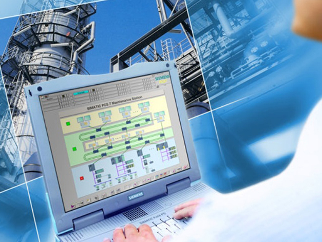

ПрАТ НТЦ «Інформсистеми» є офіційним представником ПАТ «Кременчуцький завод дорожніх машин» протягом понад 50 років і пропонує своїм клієнтам послуги з постачання асфальтозмішувальної, ґрунтозмішувальної та дорожньої техніки, а також запчастин та комплектуючих. Якість продукції ПАТ "КРЕДМАШ" підтверджено сертифікатом щодо відповідності вимогам міжнародного стандарту ISO 9001-2000.
Система відеоспостереження (СВН) дозволяє оперативно, в режимі реального часу контролювати стан вузлів установки, які з робочого місця оператора можуть бути візуально недоступні під час роботи. Це знижує психологічне навантаження на оператора, підвищує культуру виробництва. У цьому істотно підвищується швидкість реакції оператора ситуації, що виникають на ділянках установки.
 Встановивши в мікропроцесорну систему управління нове програмне забезпечення, у керівників організації, що експлуатує асфальтозмішувальну установку, з'являється можливість дистанційно контролювати роботу установки та оператора, а саме отримувати інформацію про статистику роботи, аварійні повідомлення, та поточний стан установки. Така система називається "Система віддаленого моніторингу".